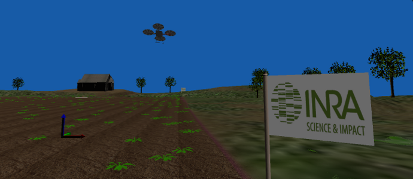

ProjectsLink
Here are some cool projects that are using LAPKT for different purposes.
Classical Planners playing Atari 2600 gamesLink

The Atari 2600 games supported in the Arcade Learning Environment (Bellemare et al., 2013) all feature a known initial (RAM) state and actions that have deterministic effects. Classical planners, however, cannot be used off-the-shelf as there is no compact PDDL-model of the games, and action effects and goals are not known a priori. Indeed, there are no explicit goals, and the planner must select actions on-line while interacting with a simulator that returns successor states and rewards. None of this precludes the use of blind lookahead algorithms for action selection like breadth-first search or Dijkstra's yet such methods are not effective over large state spaces. We thus turn to a different class of planning methods introduced recently that have been shown to be effective for solving large planning problems but which do not require prior knowledge of state transitions, costs (rewards) or goals. The empirical results over 54 Atari games show that the simplest such algorithm performs at the level of UCT, the state-of-the-art planning method in this domain, and suggest the potential of width-based methods for planning with simulators when factored, compact action models are not available.
Melissa: Planning for crop fields mapping with autonomous UAVsLink

For managing production at the scale of crop fields, maps of plant pests are used to support farmer decisions. Such maps are costly to obtain since they require intensive surveys in the field, most of the time performed by human annotators or with human-controlled Unmanned Aerial Vehicles (UAVs).
Melissa (the nymph that gave the honey to humankind), is a project where we look at the next challenge from an AI planning point of view: flying fully autonomous UAVs equipped with online sequential decision-making capabilities for pests sampling and mapping in crop fields. The system, embarked on the UAV, continuously updates a probabilistic representation of the crop field data from the sensing inputs, and selects a list of N sampling plots, to eventually obtain the best reconstructed map. These plots are then ordered, considering the side effects deriving from the spatial model of the observed data, and a trajectory planned by the classical planning engine (Lapkt).
The plan is then applied until the number of actual observations that differ from expected ones exceeds a given threshold, which triggers a new replanning episode. This planning method favourably compares on the problem of weed map construction against existing greedy approaches while adding the advantage of being adapted to autonomous UAVs' flying time constraints.
This project is a joint work between ONERA and INRA. Contact: Alexandre Albore.
TRAPPER: Invariants, Traps, and Dead-end detectionLink

We consider the problem of deriving formulas that capture traps, invariants, and dead-ends in classical planning through polynomial forms of preprocessing. An invariant is a formula that is true in the initial state and in all reachable states. A trap is a conditional invariant: once a state is reached that makes the trap true, all the states that are reachable from it will satisfy the trap formula as well. Finally, dead-ends are formulas that are satisfied in states that make the goal unreachable. We introduce a preprocessing algorithm that computes traps in k-DNF form that is exponential in the k parameter, and show how the algorithm can be used to precompute invariants and dead-ends. We report also preliminary tests that illustrate the effectiveness of the preprocessing algorithm for identifying dead-end states, and compare it with the identification that follows from the use of the h\^1 and h\^2 heuristics that cannot be preprocessed, and must be computed at run time.
BFWS: Best First Width Search PlannersLink
It has been shown recently that goal-oriented search (heuristic exploitation) and width-based search (structural exploration) can be combined to produce planning algorithms with a performance that goes beyond the state-of-the-art. Such algorithms are based on best-first width search (BFWS), a plain best-first search set with evaluations functions combined lexicographically to break ties, some of which express novelty based preferences. In BFWS(f5), for example, the evaluation function f5 weights nodes by a novelty measure, breaking ties by the number of non-achieved goals. BFWS(f5) is a best-first algorithm, and hence, it is complete but not polynomial, and its performance doesn't match the state of the art. In this work we show, however, that incomplete versions of BFWS(f5) where nodes with novelty greater than k are pruned, are not only polynomial but have an empirical performance that is better than both BFWS(f5) and state-of-the-art planners. This is shown by considering all the international planning competition instances. This is the first time where polynomial algorithms with meaningful bounds are shown to achieve state-of-the-art performance in planning. Practical and theoretical implications of this empirical finding are briefly sketched.